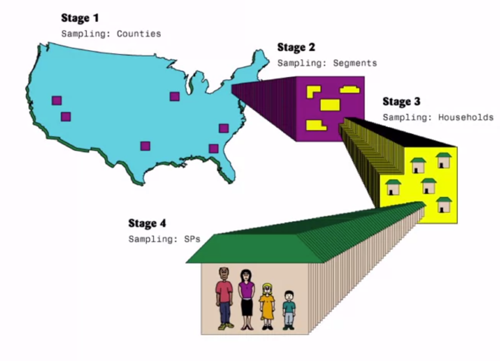

到底概率抽样是什么呢，week 4-2 就是深入探讨概率抽样啦，分为简单随机抽样和复杂概率抽样两部分
Start with Me | Coursera - Understanding and Visualizing Data with Python week 4-2 - Probability Sampling
今天奥利奥日更了吗
Lecture Overview
Simple random sampling (SRS), and links to IID data
Example: Email response times
Complex sampling for larger populations: stratification, cluster sampling, and weighting
Example: The NHANES
Key benefits of probability sampling
Simple Random Sampling (SRS)
Start with known list of N population units, and randomly select n units from the list
Every unit has equal probability of selection = n / N
All possible samples of size n are equally likely
Estimates of means, proportions, and totals based on SRS are unbiased (equal to the population values on average)
Can be with replacement or without replacement
For both: probability of selection for each unit still n / N
SRS rarely used in practice
collecting data from n randomly sampled units in large population can be expensive
简单随机抽样
介绍
从一个已知的列表/抽样框架开始
抽样框架有 N 个人口单位，指人群规模，N 就是总体单位，我们有他们的列表
而列表中随机选择 n 个单位，n就是样本的大小
按照这个样本设计，每个单位的选择概率都是相等的 = n / N
这就是总体中被选入样本的分数
在简单随机抽样的条件下，被纳入样本的概率对总体中的每个人都是一样的，是 n / N
所有可能的 n 大小的样本都是同等可能的
所以可以抽取的每一个大小为 n 的潜在样本，在简单随机抽样时，它们都有同等可能被选中
从随机样本中收集的数据，对均值、比例、总量以及其他统计量的估计是无偏的
也就是说，这些估计值与我们感兴趣的人群总体值是相等的
根据我们选择的样本，这些估计值可能会存在变异性，但是总体来说在所有这些假设样本之上，这些估计值将等于所研究的人群值，即无偏
体育场简单随机抽样
这是一个简单随机抽样的图片，看起来，这134人是从10000人中随机选择的
这是一个随机抽样的体育场视图，所有的黑点代表随机选择的个人
从中可以看到，这个134人的随机样本代表了该体育场所有不同的象限
在这个小例子中，这134人完全是从一个更大的一万人的名单中随机挑选出来的，所以可以通过收集这134人的数据，对体育场内的更大人群做出很好的代表性推断
简单随机抽样可以是有替换的，也可以是没有替换的
- 有替换是指，当我们从一个更大的名单中选择某人时候，我们已经在名单中替换了她们，我们给他们一个机会在样本中再次被选中
- 没有替换的情况更常见，一旦从给定的名单中抽出来一个人，他就不能再被抽中了
- 但是对于这两种不同类型的简单随机抽样来说，原来每个单位被选中的概率还是 n / N
简单随机抽样虽然看起来很容易想到，但是在实践中很少使用
因为在很大的总体中选取 n 个随机样本单位收集数据成本很高
比如对于分布在美国不同地区的1000个家庭，又需要开车去每一个单独的家庭采访，那费用往往令人却步
简单随机抽样一般是在人口较少的时候进行，最终收集数据比较容易，成本也比较低
SRS: Connection to IID Data
IID observations are independent and identically distributed
SRS will generate IID data for a given variable, in theory ...
All randomly sampled units will yield observations that are independent (not correlated with each other) and identically distributed (representative, in theory)
简单随机抽样 与 IID数据
IID 观测值是独立的，并且是相同分布的
简单随机抽样在理论上会产生给定变量的 IID 数据
所以当选择一个简单随机抽样，然后收集该样本中所有单位的测量值，在理论上会产生独立同分布
所有随机抽样的单位都会产生独立的观测值，所以随机抽样的单位之间没有联系，它们是相互独立地被选取的，或者说它们之间在利益衡量上没有相关性
而且这些单位是相同分布的，所以在理论上代表了一些更大的群体
所以，我们试图从一个简单的随机样本中收集到的所有这些测量值，都来自一个相同的分布，描述了更大的总体人群的分布
SRS Example
Customer service database: N = 2500 email requests in 2018
Director wants to estimate: mean email response time
Exact calculations require manual review of each email thread
Asks analytics team: sample, process and analyze n = 100 emails
Naive Approach: process the first 100 emails on the list
estimated mean could be biased if customer service representatives learn or get better over time at responding more quickly
first 100 observations may come from a small group of staff
not fully representative, independent, or identically distributed
no random selection according to specific probabilities
Better SRS Approach: number emails 1 to 2500 and randomly select 100 using a random number generator
- every email has known probability of selection = 100 / 2500
- produces random, representative sample of 100 emails (in theory)
- estimated mean response time will be an unbiased estimate of the population mean
案例
- 假设有一个客户服务数据库，N = 2500，也就是2018年邮件的请求数量
- 客服部总监想要估计一下邮件响应的平均时间
- 如果想要精确的计算，需要手动查询每个邮件线程
- 所以总监要求分析团队对n=100封邮件进行抽样、处理、分析
- 天真的方法
- 简单地处理列表中的前100封邮件
- 在这种情况下，如果客服随着时间的推移能够在更快地响应方面变得更好，那么估计的平均响应时间会有偏差
- 也许在邮件回复的初期，当人们还在了解流程的时候，需要花费更多的时间来回复，所以估计的平均响应时间会偏大
- 前100封邮件也可能来自一小部分工作人员，所以可能来自非常具体的个人，这些邮件回复不具有完全代表性，它们并不是相互独立的，因为有可能是相同的工作人员回复的，也不是完全相同的分布，因为产生于不同的回复时间分布，而不是整个部门所有人的分布
- 这种方法获取的是一个非概率样本，对于研究有局限性
- 更好的方法
- 将这些邮件从1-2500进行编号
- 然后用随机数生成器随机选择其中的100个数字，这些ID为每个邮件的编号
- 这种情况下，每一封邮件都有一个已知的选择概率
- 将产生100封邮件的随机代表样本，在理论上是从所有可能被回复的邮件中随机选择的
- 这种情况下，估计的平均响应时间也是总体人群的平均值的无偏估计，就像简单随机抽样一样
Test1
An ordered list of all students in a classroom has the following ages:
17, 21, 20, 21, 19, 18, 21, 20, 20, 17, 19, 20
A researcher wishes to select a simple random sample of size 5, and a random number generator calls for the sampling of elements 3, 8, 9, 2, and 5 from the ordered list. What is the probability of selection into this simple random sample, and what is the mean age based on the sample?
A. 1/5, 19
B. 1/5, 20
C. 5/12, 19
D. 5/12, 20
参考答案：
Test1：D
Of the 12 students, 5 are selected, making the probability of selection 5/12. The ages of the selected students based on the ordered list are 20, 20, 20, 21, and 19, making the average age 20.
“Complex” Probability Sampling
SRS rarely conducted in practice; exception = relatively cheap data collection based on well-defined population lists
With larger populations, complex samples often selected, where each sampled unit has known probability of selection
complex = anything more complicated than SRS
Complex samples have certain key features:
Population divided into different strata, and part of sample is allocated to each stratum
ensures sample representation from each stratum, and reduces variance of survey estimates(stratification)
Clusters of population units are randomly sampled first within strata, to save costs of data collection
Units randomly sampled from within clusters, according to some probability of section, and measured
A unit's probability of selection is determinde by:
- Number of clusters sampled from each stratum
- Total number of clusters in population in each strtum
- Number of units ulimately sampled from each cluster
- Total number of units in population in each cluster
Example of finding a unit's probability of selection:
- select a out of A clusters at random in a given stratum
- then select b out of B units at random from within a selected cluster
- Probability of selection : (a/A)(b/B)
复杂概率抽样
复杂 vs 简单
- 简单随机抽样在实践中很少进行，除非可能有一个基于定义良好的人群名单/行政记录样本的相对便宜的数据收集，可以从在线归档系统中真实地提取记录
- 对于更大的人群，通常会选择复杂的概率抽样，每个被抽样的单位都有一个已知的选择概率，不过不同的是，复杂概率抽样使用的是特殊的功能，可以节省成本，让样本更有效率
- 复杂抽样是指任何比简单随机抽样更复杂的东西
特征
分层的技术
- 总体人群被划分为不同的层级，部分样本被分配到每个层级
作用是保证了每个阶层的样本代表性，降低了调查估计的方差
- 分层可以让我们确保我们把一些样本分配给所有这些不同的人群划分
复杂的样本也是由聚类抽样定义的
- 在集群抽样中，我们可能会先随机选择人口单位的集群，比如说美国的县，所有的概率都是已知的，所以每个县在这些不同的分层中都会有一个已知的选择概率。所以，我们可能会从美国西部选择一定数量的集群，从美国中西部选择一定数量的集群
- 这样做的作用是，在我们实际随机选择家庭之前，先对集群进行抽样调查，这样可以节省大量的数据收集费用
- 对于名单上的地址，他们没有已知的选择概率，所以会随机选择这些家庭，就像简单随机抽样那样，根据这些选择概率，并测量这些家庭，收集感兴趣的变量，但是关键的区别在于，这些家庭来自于最初随机选择的聚类内的第二阶段抽样
一个单位的选择概率
选择概率决定于：
- 从每个层中抽样的群组数量
- 每一阶层人口中的群组数量
- 从每个群组中随机抽样的单位数量
- 每组人口中的单位总数
计算
- 假设在选择一个复杂样本时，在给定的层中从 A 中随机选择 a
- 在有了 a 的随机样本之后，在每个 a 内随机从 B 单位中选择 b
- 选择概率：(a/A)(b/B)
例子 - NHANES
假设根据地理和人口密度将美国划分为不同的区域
- 这些基于地理和人口密度的划分 —— 阶层
- 将样本分配到这些不同的阶层，确保每个阶层都有一定的代表性
- 最大限度地降低了一个不好的简单随机样本的风险
接下来从这些不同的阶层中分配一些县/县组来进行抽样
- 这就是 集群
- 为了节约成本，又随机抽取集群的样本
- 这样就可以在很小的地理范围内，对家庭进行抽样调查，而不是去更大的地理区域内随机抽样
在这些县域内以较高的比例对某些社会人口子群进行抽样调查
- 这就是 超取样
- 也许一个特定的项目对特定的个人子群体有一定的目标样本量，在随机选择家庭时，可能会在这些县内以比较高的比例对这些不同人群的子群进行抽样，这导致的结果是，根据特定项目的目标，不同类型的个体的选择概率不同
- 这种超取样意味着不同的人在第二阶段会有不同的概率被选择不同的选择概率
- 但是这没有关系，我们仍然有一个概率设计，可以利用这些概率最终对更大的人群做出代表性的推断
NHANES 多阶段抽样的过程

多阶段的聚类抽样
节省成本，在这些随机选择的聚类（县域）内以更节省成本的方式确定家庭
第一阶段
将美国划分为不同的区域，然后对这些区域内的每个县（集群）进行抽样调查
紫色的小点都是随机选择的县
第二阶段
以其中的一个县为例
在这些随机选择的县中查看较小的区域段，然后可能也会随机选择这些较小的区域段，这些就是县内的黄色部分
不是只在美国县内随机选择不同的家庭，而是在该县内的小区域段进行抽样
第三阶段
- 以其中一个区域段为例，可以看到这个随机选择的区域段内的家庭
- 可能会列出这些家庭的名单，然后一旦确定了这些家庭，就从这些家庭中选择一个随机样本，也就是在那个特定的较小地理区域内选择使用简单的随机抽样
- 一旦有了一个随机选择的家庭，就会有一个工作人员，他会去访问这个家庭，并确定家庭中的所有个人
第四阶段
- 以其中一个随机抽样的家庭为例
- 也许可以看到该家庭中的父亲、母亲和孩子，我们可能会在该家庭中随机选择其中一个人
在所有这四个阶段，我们知道选择的概率是什么，并且在整个设计过程中保持这些选择的概率
在每个阶段，我们总是知道每个不同单位的概率是多少，这就是概率抽样设计的重要特点，最终可以计算出随机抽样的每一个个体的被选择概率
抽样权重 = 选择概率的倒数
如果选择概率是1/100，那么抽样权重是100，也就是我代表了我自己和群中的其他99人
Why Probability Sampling?
- Having known, non-zero probability of selection for each unit in a population and subsequent random sampling ensures all units will have a chance of being sampled
- Probability sampling allows us to compute unbiased estimates, and also estimate features of the sampling distribution of estimates that we would see if many of the same types of probabolity samples were selected
为什么是概率抽样？
已知的非零的选择概率
样本中的每一个个体都有一个已知的非零的选择概率和随机抽样概率，根据这些选择概率，确保人口中的所有单位都会有一些机会按照概率抽样设计进行抽样
无偏估计、抽样分布
可以使用这些选择概率来计算无偏估计，使用抽样权重还可以估计抽样分布的特征，如果使用这些选择概率反复进行复杂的抽样，最终会看到这些特征
Test2
In the northeastern region of the United States (a stratum), suppose that 20 counties (clusters) are sampled at random from a list of 300 counties, and 100 housing units (elements) are sampled from a purchased list of housing units in each sampled county.
In the southeastern region of the United States, suppose that 10 counties are sampled at random from a list of 200 counties, and 100 housing units are sampled from a list of housing units in each county.
What are the probabilities of selection for housing units in each of the two strata?
A. 20/100 and 10/100
B. 20/300 and 10/200
C. 100/300 and 100/200
D. We cannot determine the probabilities of selection from the information provided.
参考答案：
Test2：D
To determine the probabilities of selection for housing units based on this complex sample design, we would need to know the total number of housing units on the list in each county, and the county to which a given housing unit belonged.
本博客所有文章除特别声明外，均采用 CC BY-SA 4.0 协议 ，转载请注明出处！